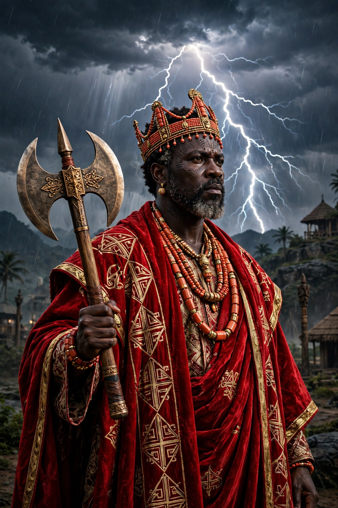

From Wikipedia, the free encyclopedia
| Shango | |
|---|---|
| Affiliation | Yoruba religion; orisha of thunder, lightning, fire and power |
| Yoruba | Ṣàngó |
| Historical root | Deified fourth king (Alaafin) of the Oyo Empire |
| Symbols | Double-headed axe (oshe), thunderstones, red and white |
| Spouse | Oya (also Oshun and Oba, in the tales) |
| Diaspora forms | Changó in Santería; Xangô in Candomblé |

Shango (Yoruba: Ṣàngó) is the orisha of thunder, lightning, fire, virility and kingship in the Yoruba religion — and, uniquely among the great orishas, a deified human being: the fourth Alaafin (king) of the Oyo Empire, whose reign and violent death passed into godhood. His emblem is the double-headed axe, his colours red and white, his voice the thunder — "Shango strikes" is the verdict on the lightning-struck, and thunderstones (prehistoric axe-heads turned up by rain) are kept on his shrines as the missiles he threw. In the diaspora he is Changó of Santería and Xangô of Candomblé, patron of drummers, dancers and kings.
The traditions tell of a king of immense power and temper, whose speech spat fire and whose experiments with a lightning medicine destroyed his own palace and family; abdicating in shame — in the sternest telling he hanged himself, and his loyalists answered the mockery "the king did not hang" (Oba kò ṣo, a folk etymology of his praise-name) by reporting his ascension into the sky, from which his thunder continues his justice. As orisha he is the archetype of charismatic, dangerous power: generous and magnetic, a lover (of Oya, who alone could follow him into storm; of Oshun and of Oba, whose severed ear is a famous tale), a dancer whose bata drums call him down, and a hanging judge of thieves and liars, whom his lightning marks.
Shango's priesthood, centred historically at Oyo, kept the royal cult of the empire; today his festivals, possession dances and shrines span Nigeria, Benin, Cuba, Brazil, Trinidad (Shango Baptists) and beyond. His image — the crowned king with the axe, dancing with a thunderbolt in each hand and fire in his mouth — is one of the great visual emblems of the Yoruba world and its survival across the Atlantic.
Oshun · African philosophy · Mythology · Zeus (fellow thunderer)